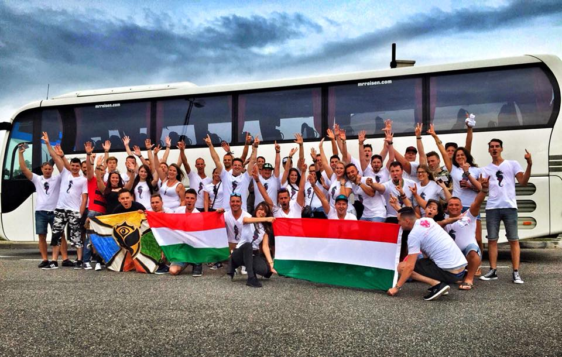
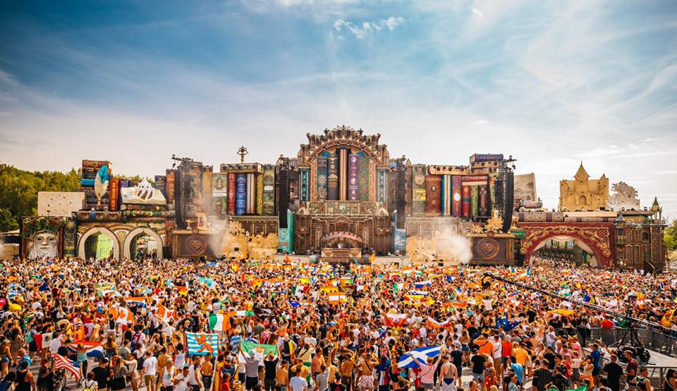
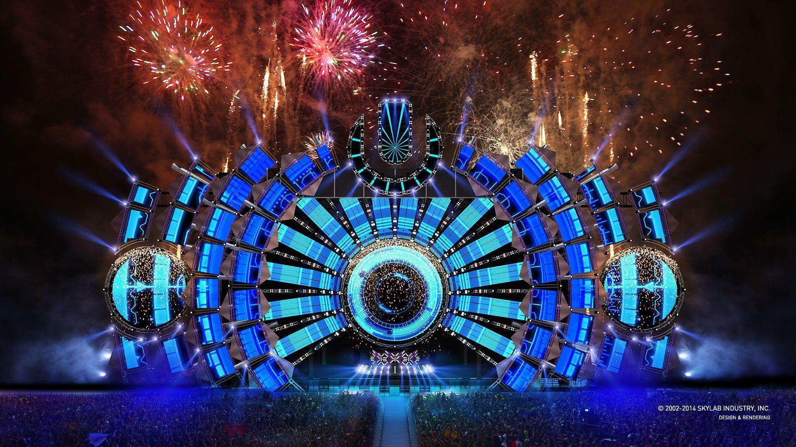

Cégünkről pár szóban
Megálmodtad a tökéletes party-t, de nem tudod, hogyan kezdj a megszervezéséhez?
Nem tudod hol? Mivel? Miként? Csak azt, hogy kivel szeretnél együtt lenni azon a bizonyos
party-n?
Tudjuk, hogy nem egyszerű feladat, épp ezért nyugodtan bízd ránk a részleteket és mi
elintézzük Neked.
Party szervezésben is otthon vagyunk olyannyira, hogy örökre emlékezetessé varázsoljuk Neked
az
adott eseményt.
A parti szervezés is épp úgy, mint a többi rendezvény típus, rengeteg figyelmet,
tapasztalatot és
odaadást igényel… pontosságot a legapróbb részletekig.

Jegyvásárlás
Mi az adminisztrációs díj?
Az adminisztrációs díj a jegyvásárlási rendszer használatának a díja. Nem tartozik a jegyárhoz,
azon felül kerül felszámításra az online lebonyolított jegyvásárlásoknál.
Mennyi adminisztrációs díj kerül felszámításra az online vásárlás során?
Az adminisztrációs díj mértéke: a megvásárolt jegy értékének a 2%-a.
A vásárlás során külön feltüntetjük ezt a Részedre.
Miért kerül felszámításra az adminisztrációs díj?
Amikor interneten keresztül, online vásárolod meg a belépőjegyet, számos rendszert veszel
igénybe. A rendszereink az online vásárlásodnál megadott adatokat tárolják, a mindenkori
adatkezelési szabályok és a honlapon közzétett Adatvédelmi és jogi nyilatkozatban foglaltak
alapján.
A tárolt adatok alapján egyértelműen be tudjuk azonosítani a vásárlási tranzakciódhoz tartozó
megvásárolt jegyet, így a későbbiekben, ha véletlen nem találod a jegyed, újra el tudjuk azt
juttatni Hozzád. Amennyiben a jelenleg is tartó pandémia miatt nem lehetne megtartani az idei
fesztivált, biztos lehetsz benne, hogy a vásárláskor használt bankkártyához tartozó bankszámlára
térítjük vissza a jegyed árát.Az online vásárlásnak számos előnye van még ezen kívül, kérünk
olvasd el a következő kérdéshez tartozó válaszunkat is.

Utazás
AUTÓBUSZOS UTAZÁSOK
A körutazásainknál használt autóbuszok többnyire Mercedes, illetve Neoplan, Scania típusú magas
felszereltséggel rendelkező 49+2 fős, vagy 53+2, 57+2 fős járművek. (Szervezett körutazásaink
esetében emeletes buszokat nem használunk!) Programjaink minden esetben Budapestről indulnak. A
találkozóhely a Déli pályaudvarnál (Hotel Mercure Buda mellett) található, az utas
tájékoztatóban megadott gyülekezési, illetve indulási időpont szerint, mely általában 05.30.
(Fontos: Az adott indulási időponttól az utazások zavartalan bonyolítása érdekében eltérni nem
tudunk!) Korszerű, biztonságos és kényelmes légkondicionált autóbuszaink, italhűtővel, egyedi
dönthető, szélesíthető ülésekkel, olvasólámpával, biztonsági övvel, audió-videó rendszerrel
felszereltek. Az autóbuszok típusától függően, az utolsó sorok ülései többnyire nem, vagy csak
kis mértékben dönthetőek, ez általában 49 fős autóbuszok esetében a jobb 11., baloldal 13. sor.
Az utolsó sor férőhelyeire árkedvezmény nincs. Hosszabb autóbuszos utazások esetében a
rendszeres időközönként (3-4 óra) megtartott 15-20 perces pihenők egyrészt a programok pontos
időbeosztásához, másrészt pedig a nemzetközi előírásokhoz alkalmazkodnak, melyek betartása a
programok pontos menetének alapfeltétele. Az ülésfoglalás lehetőségét az előleg befizetésekor a
szabad helyek függvényében biztosítjuk. (Az üléshely és az autóbusz típus váltás jogát
fenntartjuk!) Az ülésrend független a felszállás helyétől, és az utazás teljes időtartama alatt
érvényben marad. Az üléshelyet az indulás előtt kiküldésre kerülő utas programban is
szerepeltetjük. A meghirdetett létszámnál jelentősen kisebb vagy nagyobb csoport indításánál az
iroda az autóbusz típusára vonatkozó változtatás jogát fenntartja, mely az üléshely módosulását
is eredményezheti. Az új közlekedési rendelet szabályozza a járművek maximális tengelysúlyát,
mely érinti a szervezett utazások csomagokra vonatkozó szabályait is. A nemzetközi gyakorlatban
előforduló súlyellenőrzések miatt személyenként maximum egy bőrönd és egy kisebb kézipoggyász
elhelyezésére van lehetőség. Autóbuszos utazásoknál a csomagtérbe személyenként egy bőrönd (20
kg) helyezhető el. Az utastérbe csak olyan kisebb kézipoggyász hozható, melyet az ülések között
a lábuknál vagy a kalaptartón el tudnak helyezni. A közlekedő folyosóra tilos csomagot helyezni!
Esetleges ellenőrzés során, a poggyászra vonatkozó szabályok be nem tartása esetén, az utas
többletköltséget köteles fizetni. Az autóbuszon hagyott értékekért felelősséget vállalni nem
tudunk.

Biztosítás
Betegségbiztosítás a baleset vagy megbetegedés miatt felmerült költségekre, így például
megtérítjük az orvosi vizsgálat, a járóbeteg és kórházi ellátás, valamint a mentés költségeit
sürgősségi ellátás esetén.
Az Allianz utasbiztosítások kiterjednek a vírusfertőzés kapcsán külföldön szükséges sürgősségi
ellátásra, ez alól pedig a koronavírus-járvány sem jelent kivételt. Ha ügyfelünk vírusfertőzés
miatt sürgősségi ellátásra szorul, a választott utasbiztosítás szerinti limitig megtérítjük a
sürgősségi ellátáshoz kapcsolódó költségeket, így például az orvosi vizsgálatok, gyógyszerek,
kórházi ellátás, mentés és hazaszállítás költségét.
Egészségügyi segítségnyújtási szolgáltatás, melynek keretében például felvilágosítást adunk a
sürgősségi ellátás lehetőségeiről, megszervezzük a hazaszállítást.
Baleset-biztosítás, melynek keretében egyösszegű szolgáltatást nyújtunk baleseti eredetű halál
vagy maradandó egészségügyi károsodás esetén.
Poggyászbiztosítás, mely kiterjed a külföldre vitt vagyontárgyak ellopására, elrablására,
balesetből vagy elemi csapásból eredő sérülésére.
Utazási segítségnyújtási szolgáltatások, melyek kiterjednek például poggyászkésésre,
járatkésésre, járattörlésre, külföldi tartózkodás meghosszabbítására sürgősségi ellátás esetén,
idő előtti hazautazásra természeti katasztrófa miatt, illetve segítséget nyújt hatósági karantén
esetén.
Jogvédelmi biztosítás, mely kiterjed a gondatlanságból elkövetett szabálysértés vagy
bűncselekmény, illetve személyi sérüléses baleset esetén az ügyvéd és óvadék megtérítésére.
Felelősségbiztosítás, mely baleseti eredetű testi sérülés okozása esetén kiterjed a sürgősségi
ellátás költségeire, valamint szálláshelyi károkozás esetén felmerült költségekre.